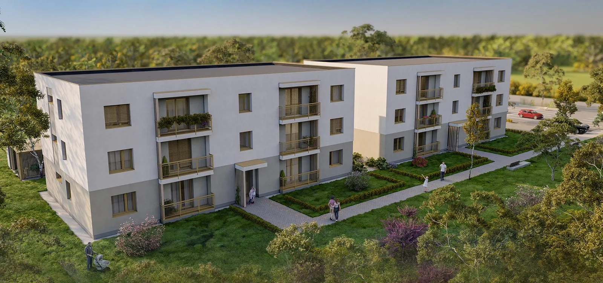

Dvojizbový byt
114 900 €
44,20 m² vrátane loggie
- Vstupná chodba3,04 m²
- Obytná kuchyňa21,50 m²
- Izba12,00 m²
- Kúpeľňa + WC3,61 m²
- Loggia4,05 m²
Byty A1, D1, E2, H2, I3, L3
Černík · okres Nové Zámky · novostavba
Dvojizbové a trojizbové byty v obci Černík – ideálne pre rodiny aj investorov.
Nízke mesačné náklady vďaka moderným technológiám – tepelné čerpadlo, solárne kolektory a kvalitná izolácia.
Žite v harmónii s prírodou – zeleň, detské ihrisko a priateľská komunita v srdci Černíka.
Všetko po ruke – obchody, škôlka, lekár a rýchly prístup do Nitry či Podhájskej.

O projekte
Projekt pozostáva z dvoch dispozične rovnakých bytoviek umiestnených vedľa seba, v okolí ktorých je plánovaná zelená výsadba lúčnych kvetov a stromov.
Ponuka
114 900 €
44,20 m² vrátane loggie
Byty A1, D1, E2, H2, I3, L3
149 900 €
68,67 m² vrátane loggie
Byty B1, C1, F2, G2, J3, K3
Dve dispozične rovnaké bytovky, tri nadzemné podlažia, štyri byty na podlaží. Všetky byty v ponuke sú voľné (stav k 13. 10. 2026). Klik na byt otvorí pôdorys a cenu.
Lokalita
Černík je malá obec so srdcom v tichej lokalite, ponúkajúcej pokoj a súčasne rýchly prístup do okolitých miest. Černík, umiestnený v severnej časti okresu Nové Zámky, patrí do Nitrianskeho kraja. Obec poskytuje výhľad na ľavý breh rieky Nitry, vinohradnícku oblasť a lesy na rozlohe až 315 ha, pričom sa rýchlo rozvíja aj miestny priemysel. S rozlohou poľnohospodárskej pôdy viac ako 900 ha a celkovou rozlohou obce 1 339 ha predstavuje malý kúsok krajiny plný príležitostí.
Kataster obce obsahuje rybník a časť štrkoviska, obľúbené miesta rybárov a rodín na relaxačné prechádzky. Ideálne sú nielen na stretávanie a oddych, ale aj na tvorbu spoločných spomienok. Nezabudnime ani na blízkosť Podhájskej, ktorá je len kúsok od obce a ponúka ďalšie možnosti rekreačného vyžitia.
Susedné obce: Mojzesovo, Vinodol, Komjatice, Maňa, Kmeťovo, Michal nad Žitavou.
Prečo Černík
Predstavujeme modernú novostavbu s dostupnými a pohodlnými bytmi.
Vďaka moderným izolačným technológiám, vykurovaniu tepelným čerpadlom, ohrevu vody tepelným čerpadlom a solárnym kolektorom sú mesačné náklady na bývanie príjemne nízke.
Okolie ponúka príjemné prostredie na prechádzky a cykloturistiku.
Obchody, materská škola, základná škola Mojzesovo, pošta, reštaurácia a všeobecný lekár sú v pohodlnom dosahu.
Obec disponuje najmodernejším zberovým dvorom s plným spektrom služieb pre občanov a poskytuje aj širokú škálu služieb na objednávku.
Obec pravidelne organizuje rôzne kultúrno-spoločenské slávnosti a podujatia.
Obyvatelia sa môžu tešiť na bezpečné a priateľské prostredie, kde sa každý cíti ako doma.
Charakteristika bytového domu

Financovanie
Využite možnosť sprostredkovania hypotekárneho úveru a poistenia nehnuteľnosti u našich finančných špecialistov.
5 000 €
Po podpise rezervačnej zmluvy klient zaplatí 5 000 € na účet developera. Po pripísaní platby mení nehnuteľnosť status z Voľný na Rezervovaný a developer ju ďalej neponúka.
20 %
20 % z kúpnej ceny na základe Zmluvy o budúcej kúpnej zmluve, úhrada do 30 pracovných dní od právoplatného stavebného povolenia. Rezervačný poplatok sa započítava do 1. splátky.
Úhrada zvyšku kúpnej ceny do 30 dní od podpisu kúpnej zmluvy.
Úhrada zvyšku kúpnej ceny do 30 dní od podpisu kúpnej zmluvy, po kolaudácii stavby.
Máte otázku k bytu alebo chcete termín obhliadky? Zavolajte, alebo napíšte.